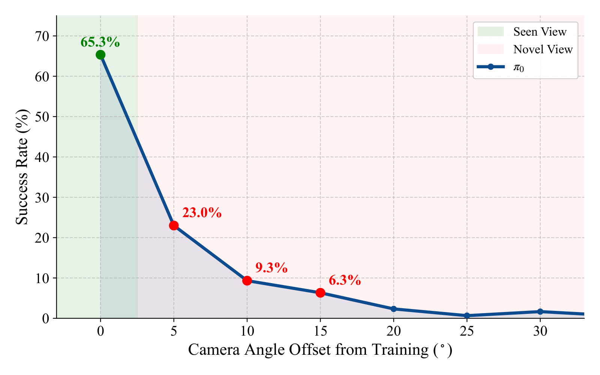
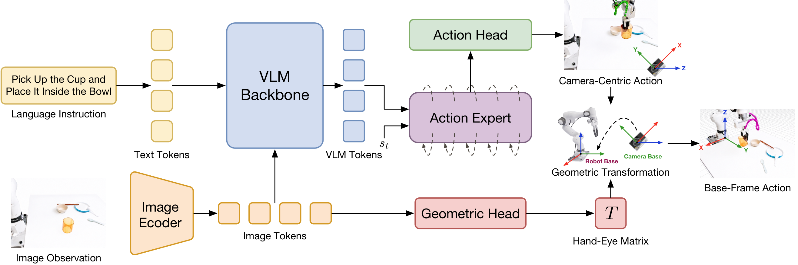

Sim-robot-learning · 归档于 2026-11-03
CamVLA
From Fixed to Free Cameras: Calibration-Free View-Robust Vision-Language-Action Model
归档到 Robot learning in simulation：模仿学习的 VLA policy 在 RLBench 仿真里训练，解决相机挪动后的 sim / 真机泛化；它也关系到 Robotic harness，因为 harness 里跑的就是 π0 这类固定相机的 VLA。
TL;DR
- Problem
- VLA 在 base frame 出动作，等于把“相机在哪”背进了权重；相机转 15°，π0 从 65.3% 掉到 6.3%。已有的 view-robust 方法都要部署时给相机外参。
- Idea
- 两个 head 并行：Action Head 在相机自己的坐标系里出动作，Geometric Head 从单张 RGB 自己估 hand-eye matrix，再用旋转 R 把动作转回 base frame。不要标定、不要深度、单视角。
- Result
- RLBench 未见视角均值 π0 33.2 → 51.4，GR00T N1.7 28.4 → 38.4（Table 1）；真机 15° 偏移 π0 16.0 → 29.3（Table 2）；只多 6.3M 参数、1 ms。
Problem
相机一挪，“图里往左”对应的机械臂方向就变了，policy 却还按老映射走
Running example · 后面每个 stage 都跟着它走
Pick up the cup and place it inside the bowl（Fig. 2 和真机任务都用它）：Franka Research 3 + 一台第三人称 RealSense，测试时相机绕原位置转了 15°；输入只有 一张 224×224 RGB + 指令 + 末端在 base frame 的位姿 → 想要：抓起橙色杯子，放进碗里。

怎么读这张图
- 横轴 Camera Angle Offset：测试相机相对训练相机转了多少度；绿色区 Seen View = 训练视角，粉色区 Novel View = 没见过的视角。
- 蓝线 π0：0° 时 65.3%，5° 就到 23.0%，15° 只剩 6.3%，20° 以后接近 0。
- 要点：场景完全可见、任务没变，只是相机转了一点，就几乎全挂 —— 说明 policy 学到的是“这台相机下的像素 → base 动作”，不是“物体在哪”。
flowchart LR IN["例子输入
RGB，相机转 15°"] --> A1["Base-frame VLA
π0 / GR00T N1.7"] A1 --> AX["映射是旧相机的
Cup 23.3%，均值 16.0%"]:::gap IN --> B1["Camera-aware VLA
输入相机外参"] B1 --> BX["外参已过时 / 未知
需重新标定才能跑"]:::gap IN --> C1["3D / depth VLA
点云、多视角"] C1 --> CX["只有单张 RGB
缺深度，跑不了"]:::gap
第一条是 Table 2 的真机数字（π0，15°，Pick & Place Cup 23.3%，五个任务均值 16.0%；GR00T 均值 14.7%）。项目页 15° 对比视频里 π0 把杯子放到碗沿上翻倒。后两条是推断：论文没有和它们跑数值对比，只在 §II 说它们部署时要已知准确的相机内外参，或要深度 / 多视角 / 标定几何。
根本问题：base-frame 动作和相机视角的图像不对齐，网络只好把 hand-eye 变换隐式背进权重。这篇的切入点：把“怎么动”放回相机系里学，把“相机在哪”单独估出来，最后用几何精确地拼起来。
Related work
| 相关工作 | 解决什么 | 怎么解决 | 和本文的区别 |
|---|---|---|---|
| 同一问题 · 别的解法 | |||
| Camera-space action（本文所属） OC-VLA | 相机换位后动作对不上 | 在相机坐标系里出动作，用标定外参转回 base | 外参靠事先标定 → 本文从 RGB 自己回归外参 |
| Pose-conditioned VLA Jiang et al.（ray embedding）、4D-VLA、AnyCamVLA | 换视角泛化 | 相机参数作输入：ray embedding、反投影到 base、合成 canonical 视图 | 动作仍在 base frame、相机位姿是输入 → 本文换动作坐标系，位姿是输出 |
| 3D-structure policy PerAct、3D-feature VLAs | 视角无关的空间理解 | 体素 / 点云 / 深度 / 多视角特征 | 要深度或多相机、计算重 → 本文单张 RGB，无深度 |
| View synthesis & invariance 新视角合成、图像增广、view-invariant 表征 | 让输入或特征不随视角变 | 合成 / 增广图像，或学视角不变的特征、latent action | 只改输入侧，动作坐标系不变 → 本文显式估几何并转换动作 |
| 相似做法 · 别的问题 | |||
| Generalist VLA π0、π0.5、GR00T N1、Octo | 通用语言条件操作 | VLM + flow-matching / diffusion 动作头，base-frame 动作 | 换视角泛化差 → 本文是插件，加在 π0、GR00T N1.7 上 |
来源：论文 §II Related Work（A. VLA models，B. Viewpoint generalization）和 §I 引言，未另行检索。
Level 1 · Big picture
“怎么动”在相机系里预测，“相机在哪”自己估，乘一个旋转回到 base

怎么读这张图
- 左边 Language Instruction / Image Observation：正是例子：Pick Up the Cup and Place It Inside the Bowl + 一张桌面 RGB（杯子、碗）。
- 中上 VLM Backbone → VLM Tokens → Action Expert：原样保留 π0 的结构；st 是末端在 base frame 的位姿，作为状态输入。
- Action Head（绿）→ Camera-Centric Action：右上小图的坐标轴画在相机上（X/Y/Z 是相机的轴），绿色轨迹是相机系下的动作。
- 下方 Image Encoder → Image Tokens → Geometric Head（红）→ T：新加的分支，从图像特征回归 Hand-Eye Matrix（相机 → base 的位姿）。
- 右中 Geometric Transformation：虚线箭头从 Camera Base 指向 Robot Base，用 T 把动作搬到机器人坐标系。
- 最右 Base-Frame Action：坐标轴改画在机械臂底座上，粉色轨迹是真正执行的动作。
flowchart LR I["Input
RGB + cup 指令"] --> M["两个 head
相机系动作 + R"] M --> O["Base 动作
R·Δp_c，夹爪不变"]:::win
Level 2 · Stages
4 个 stage，外加一个训练机制
flowchart TD S1["1 · Encode
RGB 224² + 指令 + s_t"] --> S2["2 · Action Head
Δp_c, Δr_c, g"]:::win S1 --> S3["3 · Geometric Head
τ, ω → R"]:::win S2 --> S4["4 · Transform
Δp_b = R·Δp_c"] S3 --> S4 click S1 href "#stage-1" click S2 href "#stage-2" click S3 href "#stage-3" click S4 href "#stage-4"
点击 stage 展开 Level 3 细节；训练怎么监督两个 head、闭环怎么跑见 训练与闭环执行。
Level 3 · Details
每个 stage 的细节
符号表
| 符号 | 白话 | 例子里 |
|---|---|---|
| It | 当前这一帧第三人称相机的彩色图 | 桌上橙色杯子和碗，相机转了 15° |
| st = [pb, rb] | 机械臂末端此刻在底座坐标系里的位置和朝向（朝向用 axis-angle：一个转轴乘转角） | Franka 读出的末端位姿，不需要知道相机 |
| Δpc, Δrc | 末端下一步要平移多少、转多少，按相机自己的轴表达 | “朝图里杯子的方向移” |
| g | 夹爪开合，0 到 1 | 抓杯子时闭合，放进碗时张开 |
| T = [R, τ] | hand-eye matrix：相机相对底座的位姿；把相机坐标里的点换成底座坐标的变换 | 相机转了 15° 后的新位姿 |
| R, ω | 相机相对底座的旋转；ω 是它的 axis-angle 写法，Rodrigues 公式把 ω 变成矩阵 R | 真机 15° 时平均估计误差 9.39°（Table 3） |
| τ | 相机相对底座的平移（相机离底座多远、在哪边） | 15° 时平均误差 27.16 cm，但它不影响执行（见 Stage 4） |
| Δpb, Δrb | 真正发给机械臂的动作，按底座的轴表达 | Franka 执行的那一步 |
Stage 1 Encode 单张 RGB + 指令 + base-frame 状态 → image tokens、VLM tokens
- Why：部署时只能指望一台单目 RGB；不要深度，不要腕部相机。
- How：第三人称图缩到 224×224，腕部相机不用；backbone 原样沿用 π0 或 GR00T N1.7 及其训练 recipe。
- 状态留在 base frame：如果状态也换到相机系，就得在观测时知道外参，又要标定；Table 7 显示这样只多 0.3 分（51.7 vs 51.4），不划算。
- 分叉：image encoder 的 token 一路进 VLM（给 Stage 2），一路直接进 Geometric Head（给 Stage 3）。
Running example 在这一步
转了 15° 的相机拍到杯子和碗 + “Pick up the cup and place it inside the bowl” + 末端当前位姿 → 两组 token。
Stage 2 Action Head（camera-centric） VLM tokens + st → 相机系动作 [Δpc, Δrc, g]
- Why：图像里的运动和相机系下的运动天然对齐：图里往左，就是相机 X 轴负方向，不管相机装在哪。网络不用再背 hand-eye 映射。
- How：π0 的 action expert 结构不变，只把监督目标从 base-frame 增量换成相机系增量；损失仍是 baseline 自己的（π0 是 flow matching）。
- 旋转增量按 ΔQ = Q(1)(Q(0))⊤ 定义（新朝向乘旧朝向的逆，左乘差），再转成 axis-angle。
- 证据：只换动作坐标系就是最大的单项提升，33.2 → 51.4（Table 7）。
flowchart LR a["VLM tokens + s_t"] --> b["Action Expert
flow matching"] b --> c["相机系动作
朝图中杯子移"]:::win
Running example 在这一步
杯子在图里的位置 → “沿相机轴朝杯子移、下降、闭合夹爪”这样一段相机系动作。（示意，论文没有给逐步数值）
Stage 3 Geometric Head image tokens → hand-eye matrix T（τ, ω → R）
- Why：Stage 2 的动作要转回 base，必须知道相机在哪；但部署时不想标定，所以让网络从 RGB 自己估（“self-localizing”）。
- How：image encoder 的视觉 token 做 mean pooling → 3 层 MLP（hidden 1024，GELU）→ 平移 τ（3 维）+ 旋转 ω（3 维 axis-angle）→ Rodrigues 得到 R。
- 为什么接 image encoder 而不是 VLM：VLM 特征的成功率略高（53.5 vs 51.4），但位姿误差大（14.7 cm / 3.7° vs 4.7 cm / 1.4°），论文说它对离散训练视角过拟合，在中间角度会突然跳，执行有风险（Table 9）。
- 不能 detach：梯度截断后 image encoder 版掉到 42.6，VLM 版掉到 20.9（Table 9），所以端到端一起训。
- 代价：多 6.3M 参数（约 0.19%）、1.0 GFLOPs、1 ms（RTX 4090，Table 4）。
flowchart LR a["image tokens"] --> b["mean pool
3-layer MLP"] b --> c["τ, ω → R
相机转了约 15°"]:::win
Running example 在这一步
从这张图估出相机相对底座的位姿。真机在 15° 偏移下平均误差：旋转 9.39°、平移 27.16 cm（Table 3，五个任务的均值，不是这一个任务单独的）。
Stage 4 Geometric Transformation 相机系动作 + R → base-frame 动作
- Why：机械臂只认底座坐标；这一步是纯几何、无参数，不会学偏。
- How：平移增量 Δpb = R·Δpc；旋转增量 Δrb = R·Δrc（axis-angle 在旋转共轭下等变：R·exp([v]×)·R⊤ = exp([Rv]×)）；夹爪 g 原样通过。
- 平移 τ 自动消掉：点的变换是 pb = R·pc + τ，两点相减 τ 抵消，所以增量动作只受 R 影响。真机 15° 时 τ 误差 27 cm，成功率照样提升（Table 3 的讨论）。
- 那为什么还回归 τ：论文说帮助视觉 grounding，也给绝对动作版本留口子；只回归旋转的版本几乎一样（51.3 vs 51.4，Table 8）。
- 对 R 误差有多宽容：人为往真值 R 里加随机旋转噪声，1° 时 63.3%、5° 时 58.7%（无噪声 64.0%），到约 12° 仍不低于无噪声的 π0（36.0%）（Fig. 5，文中数字）。
flowchart LR a["相机系 Δp_c, Δr_c"] --> c["乘 R
τ 相减抵消"] b["Geometric Head 的 R"] --> c c --> d["Base 动作
放进碗里"]:::win
Running example 在这一步
相机系的“朝杯子移”乘上估出的 R → Franka 底座坐标下的真实位移；项目页 15° 视频里 CamVLA 把杯子稳稳放进碗里，π0 放在碗沿上翻倒。
贯穿全程 训练监督与闭环执行 多视角标定数据 → 两个 head 联合训练；部署时每个 planning step 重估
- 损失：L = Lact + 0.1·Lext；Lext 是 τ 和 ω 对真值的 MSE。真值外参只在训练时当监督，部署不要。
- 训练视角：仿真里前置相机绕底座 −90°~90°，每 15° 一个训练视角（13 个），每个任务每个视角 100 条示范；测试用没见过的 5° 网格点。真机 5 台标定好的相机 Cam 1–5，每个视角 100 条示范。
- 闭环：仿真每次执行预测轨迹的前 5 步（20 Hz），真机前 20 步（10 Hz），然后重新看图、重新估 R。论文把对 R 小误差的宽容归功于这种闭环反馈。
- 所以能用手持相机：人一边移动相机、一边让机器人干活，R 每次重估（Fig. 14，只有定性展示，没有数字）。
Recap：例子覆盖了论文的哪些 idea
| 论文里的 idea | 例子里在哪体现 |
|---|---|
| Viewpoint trap：base-frame VLA 换视角就崩 | Problem：相机转 15°，π0 Cup 23.3%，杯子放到碗沿上 |
| Camera-centric action | Stage 2：“朝图中杯子移”按相机轴表达 |
| Self-predicted hand-eye matrix | Stage 3：从这张图估出相机转了约 15°（真机均值误差 9.39°） |
| 确定性几何变换，τ 抵消 | Stage 4：乘 R 得到 Franka 动作；27 cm 的 τ 误差不影响 |
| Base-frame 状态保持免标定 | Stage 1：末端位姿直接从 Franka 读 |
| 闭环重估 → 移动相机 | 贯穿全程：手持相机的 cup→bowl 视频 |
| 插件式、开销小 | Stage 3：+6.3M 参数，+1 ms |
Results
在 π0 和 GR00T 上都提升了未见视角的成功率，且自估外参几乎追平真值外参
顺序同论文：E1 仿真未见视角 → E2 真机换相机 → E3 外参估得多准、误差能容忍多少 → E4 训练视角多密才够 → E5 哪个设计起作用 → E6 开销。比的都是成功率（E6 比参数量和时延）。
这个工作区下载不到 PDF，下面的表格是按论文 arXiv HTML 版的数字重排的，不是作者原图截图。
E1没见过的仿真视角下，加 CamVLA 能好多少？§IV · Table 1
| Model | Slide Block | Push Buttons | Take Umbrella | Close Laptop | Lamp Off | Put Knife | Mean |
|---|---|---|---|---|---|---|---|
| π0 | 18.3 | 51.5 | 32.3 | 57.0 | 29.8 | 10.0 | 33.2 |
| π0 + CamVLA | 44.5 | 72.3 | 39.2 | 69.0 | 58.0 | 25.3 | 51.4 |
| GR00T N1.7 | 27.5 | 13.5 | 41.8 | 47.7 | 28.2 | 11.5 | 28.4 |
| GR00T N1.7 + CamVLA | 44.7 | 30.5 | 50.3 | 56.0 | 35.0 | 14.0 | 38.4 |
Table 1（按论文数字重排）：RLBench zero-shot，未见视角上的成功率（%）。先看 Mean 列。
- 说明什么
- 成功率更高，六个任务全部提升。π0 均值 33.2 → 51.4（+18.2），GR00T N1.7 28.4 → 38.4（+10.0）；最大的是 Slide Block 18.3 → 44.5 和 Lamp Off 29.8 → 58.0。
- 在故事里
- 主结果：同一个插件对两种 VLA 都有效，不是只调好了一个模型。
- 指标
- 任务成功率（%），对所有未见视角取平均；论文正文没有单独给出成功判据，沿用 RLBench 任务自带的判定（推断）。
- 怎么评测
- RLBench 6 个任务；前置相机绕底座 −90°~90°，训练用每 15° 的 13 个视角，测试用中间没见过的 5° 网格点；每任务 50 个 episode。
- baseline 与 CamVLA 用同样的多视角训练数据（Table 5 的 π0 行也按同一视角间隔训练）；baseline 各自按原 recipe 训。
E2真机上把相机转 5° / 10° / 15° 还行吗？§IV · Table 2
| π0 · Task | 0° Base | 0° Ours | 5° Base | 5° Ours | 10° Base | 10° Ours | 15° Base | 15° Ours |
|---|---|---|---|---|---|---|---|---|
| Basket Upright | 75.0 | 88.3 | 58.3 | 80.0 | 31.7 | 68.3 | 16.7 | 48.3 |
| Pick & Place Banana | 53.3 | 80.0 | 45.0 | 68.3 | 33.3 | 50.0 | 0.0 | 18.3 |
| Push Cabbage | 45.0 | 81.7 | 50.0 | 70.0 | 33.3 | 43.3 | 16.7 | 31.7 |
| Wipe Table | 75.0 | 68.3 | 51.7 | 71.7 | 41.7 | 51.7 | 23.3 | 18.3 |
| Pick & Place Cup | 68.3 | 76.7 | 61.7 | 50.0 | 56.7 | 63.3 | 23.3 | 30.0 |
| Mean | 63.3 | 79.0 | 53.3 | 68.0 | 39.3 | 55.3 | 16.0 | 29.3 |
| GR00T N1.7 · Task | 0° Base | 0° Ours | 5° Base | 5° Ours | 10° Base | 10° Ours | 15° Base | 15° Ours |
|---|---|---|---|---|---|---|---|---|
| Basket Upright | 95.0 | 96.7 | 88.3 | 100.0 | 36.7 | 73.3 | 0.0 | 45.0 |
| Pick & Place Banana | 48.3 | 70.0 | 28.3 | 53.3 | 13.3 | 30.0 | 0.0 | 8.3 |
| Push Cabbage | 65.0 | 73.3 | 53.3 | 81.7 | 65.0 | 66.7 | 30.0 | 50.0 |
| Wipe Table | 68.3 | 86.7 | 56.7 | 63.3 | 35.0 | 48.3 | 26.7 | 36.7 |
| Pick & Place Cup | 46.7 | 76.7 | 33.3 | 63.3 | 28.3 | 46.7 | 16.7 | 25.0 |
| Mean | 64.7 | 80.7 | 52.0 | 72.3 | 35.7 | 53.0 | 14.7 | 33.0 |
Table 2（按论文数字重排）：真机成功率（%），Base = baseline，Ours = 加 CamVLA；三台测试相机平均。先看 Mean 行，再看例子那一行（Pick & Place Cup）。
- 说明什么
- 每个偏移档的均值都更高，偏移越大相对提升越大。π0 15° 均值 16.0 → 29.3，GR00T 14.7 → 33.0；例子 Cup 在 15°：π0 23.3 → 30.0，GR00T 16.7 → 25.0。连 0° 训练视角附近也提升（π0 63.3 → 79.0）。不是每格都赢：π0 的 Wipe Table 0° 和 15°、Cup 5° 是 baseline 更好。
- 在故事里
- 证明 sim 里的结论在真实相机、真实标定误差下也成立。
- 指标
- 任务成功率（%）；每任务、每个偏移、每台测试相机 20 个 episode，三台相机平均。
- 怎么评测
- Franka Research 3 + 平行夹爪；RealSense D435i；5 个任务。
- 训练用 5 个标定视角 Cam 1–5，每视角 100 条示范；测试把 Cam 2/3/4 各转 5°、10°、15°。
- 0° 指的是训练相机原位（推断：对应论文 canonical view）；所以 0° 的提升说明相机系动作也让多视角训练本身更一致（推断）。
E3自己估的外参有多准，误差能容忍多少？§IV · Table 3 · Fig. 5
| 真机 hand-eye 误差 | 0° | 5° | 10° | 15° |
|---|---|---|---|---|
| Translation (cm) | 1.35 | 2.12 | 7.91 | 27.16 |
| Rotation (°) | 2.49 | 4.73 | 5.98 | 9.39 |
| Fig. 5：往真值 R 加旋转噪声 | 0° | 1° | 5° | ≈12° |
|---|---|---|---|---|
| CamVLA 成功率 (%) | 64.0 | 63.3 | 58.7 | ≈ π0 的 36.0 |
上表是 Table 3（按论文数字重排）；下表是根据 Fig. 5 正文里报出的几个数字整理的，曲线其余点论文正文没给。
- 说明什么
- 更稳：旋转估得够准，且对旋转误差有余量。真机旋转误差 2.49° → 9.39°，都在约 12° 的容忍范围内；平移误差到 27.16 cm，但增量动作里 τ 抵消，所以不影响执行。
- 在故事里
- 回答“不标定靠得住吗”：只有 R 进入执行，而 R 估得够准。
- 指标
- 平移误差（cm）、旋转误差（°）对真值外参；Fig. 5 是成功率（%）。
- 怎么评测
- Table 3：真机 Cam 2–4 各偏移档。
- Fig. 5：噪声是绕随机轴的随机旋转，每个 planning step 重新采样；1°–20° 每 1°，25°–45° 每 5°；不加平移噪声。论文正文没写用了哪些任务和视角。
E4训练视角要多密？§IV · Table 5 · Table 6
| 训练视角间隔 | π0 | CamVLA | CamVLA†（真值外参） | Trans. err (cm) | Rot. err (°) |
|---|---|---|---|---|---|
| 15° | 33.2 | 51.4 | 52.3 | 4.69 | 1.41 |
| 30° | 25.5 | 34.0 | 40.0 | 19.71 | 4.77 |
| 45° | 16.8 | 21.2 | 26.3 | 34.83 | 8.28 |
Table 5（按论文数字重排）：RLBench 成功率（%）和外参误差。Table 6 另报了相对掉点：从见过的相邻视角到没见过的中间视角，π0 平均掉 8.9%，CamVLA 掉 4.1%；[30°, 45°] 区间 π0 掉 20.8%，CamVLA 掉 0.9%。
- 说明什么
- 视角越密越好；15° 时自估外参几乎等于真值外参（51.4 vs 52.3）。视角变稀时外参误差变大（1.41° → 8.28°），和真值版的差距也拉大（0.9 → 5.1 分）。
- 在故事里
- 说明瓶颈是外参回归，而 15° 的采样就够把它学好。
- 指标
- 未见视角平均成功率（%）；Table 6 的 Drop = (Seen − Unseen) / Seen，Seen 取区间两端训练视角里较高的那个。
- 怎么评测
- 同 E1 的 RLBench 设置，训练间隔换成 30°、45°。
- π0 也用同样间隔的视角训练，比较是公平的。
E5哪个设计在起作用？§IV · Table 7 · Supp. Table 8, 9
| Variant | State | Action | Hand-eye 来源 | SR (%) |
|---|---|---|---|---|
| π0 | Base | Base | 无 | 33.2 |
| CamVLA‡ | Camera | Camera | 真值 | 51.9 |
| CamVLA* | Camera | Camera | 自估 | 51.7 |
| CamVLA† | Base | Camera | 真值 | 52.3 |
| CamVLA | Base | Camera | 自估 | 51.4 |
| 外参特征来源（Table 9） | SR (%) | Trans. (cm) | Rot. (°) |
|---|---|---|---|
| Image Encoder | 51.4 | 4.7 | 1.4 |
| Image Encoder (Detach) | 42.6 | 11.7 | 13.2 |
| VLM Backbone | 53.5 | 14.7 | 3.7 |
| VLM Backbone (Detach) | 20.9 | 45.0 | 36.0 |
Table 7、9（按论文数字重排），RLBench 15° 间隔设置。Table 8：只回归旋转 51.3%（旋转误差 1.6°），完整 6-DoF 51.4%。
- 说明什么
- 提升几乎全来自“相机系动作”（33.2 → 51.4）；状态在哪个坐标系、外参是真值还是自估，只差不到 1 分。特征必须来自 image encoder 且不 detach；平移 τ 可有可无。
- 在故事里
- 支撑“解耦 + 自估”的设计选择：免标定几乎不付代价。
- 指标
- 未见视角平均成功率（%）；外参平移 / 旋转误差。
- 怎么评测
- 都以 π0 为 backbone，RLBench 设置同 E1。
- VLM 特征成功率最高却没选：论文说它在中间角度位姿会突跳，执行有风险。
E6多花多少算力？§IV · Table 4
| Model | Params (M) | FLOPs (G) | Inference (ms) |
|---|---|---|---|
| π0 | 3238.1 | 660.9 | 61 |
| CamVLA | 3244.4 | 661.9 | 62 |
Table 4（按论文数字重排），单张 RTX 4090。
- 说明什么
- 几乎免费：+6.3M 参数（0.19%）、+1.0 GFLOPs、+1 ms。
- 在故事里
- 说明它能当插件直接加在现有 VLA 上。
- 指标
- 参数量、FLOPs、单次推理时延。
- 怎么评测
- 只比了 π0 版本。
Limits
局限和开放问题
- 只用一台第三人称相机；多相机系统里腕部相机的扰动没处理（论文自述）。
- 大幅视角变化和高精度任务仍吃力：视觉特征出分布、外参回归误差（论文自述）。真机测试最大只到 15°，15° 时均值也只有 29–33%。
- 失败案例（Fig. 15）：物体在画面边缘、动作超出工作空间、机械臂自遮挡。
- 训练仍要多个标定过的视角（真值外参做监督），而且视角越稀越差（Table 5）；只是部署时免标定。
- 视角变化只有绕底座的旋转（仿真里像方位角）；论文没给仰角、距离变化的设置。
- 没有和 OC-VLA、4D-VLA、AnyCamVLA 等 camera-aware 方法跑数值对比。
- 没有代码链接；训练超参（学习率、batch、步数）论文没给。
For Robot learning in simulation
对我们有什么用
- Harness 里的 VLA 都是固定相机：robot-harness 在 RoboTwin、LIBERO/LIBERO-Pro 上跑的 π0 类 policy，同样会掉进 viewpoint trap；在 sim 里把相机转 5°/10°/15° 是一个便宜的鲁棒性压力测试，SO-101 真机换支架时也该测。
- WorldClaw / Genesis 能产训练数据：CamVLA 需要“多视角 + 真值外参”的示范，且视角越密越好（Table 5）；Genesis 渲染天然给每个相机的精确外参，正好批量造这种数据。
- Geometric Head 可当 Supervisor 的证据：每步估出的 hand-eye 旋转如果突然偏离标定值，可以作为“相机被碰了”的报警信号（这是我们的推想，论文没做）。